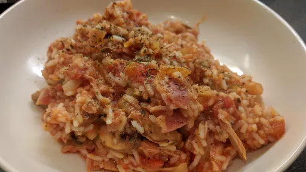

Tuna & tomato rice
25 mins
Serves 4

Ingredients
-
225
g long grain rice
-
1
tbsp olive oil
-
2
cloves garlic, finely chopped
-
1
onion, finely chopped
-
2
rashers smoked streaky bacon, trimmed of fat, chopped
-
175
g chestnut mushrooms, sliced
-
2x 400 g cans chopped tomatoes
-
1x 200 g can tuna in spring water, drained
-
generous handful
flat-leaf parsley leaves, finely chopped
Instructions
- Cook the rice in salted boiling water for 10-12 minutes
.
- Meanwhile, heat the oil in a pan and fry the garlic, onion and bacon for 5 minutes
, stirring often. Add the mushrooms and cook for another 2-3 minutes
. Stir in the tomatoes and tuna and season well. Heat through for 5 minutes
.
- Drain the rice, stir it until the tomato sauce with the parsley, mixing gently, then divide among 4 bowls to serve.
-
kcal
346
-
fat
6 g
-
saturates
2 g
-
carbs
57 g
-
sugar
3 g
-
fibre
6 g
-
protein
19 g
-
salt
3.52 g
BBC Good Food: Low-fat Feasts
Short Link
Long Link